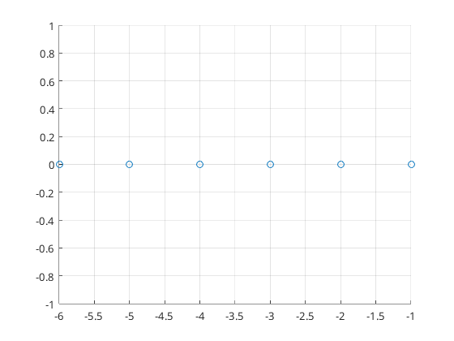
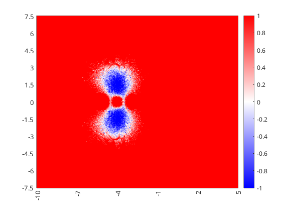
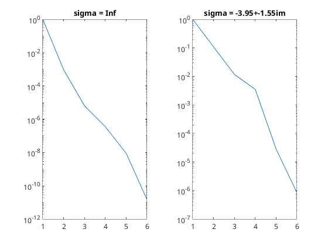

Contents
Setup Sigma
n = 6; refew = -n:-1;
A = diag(refew); B = (1:n)'; C = 1:n;
figure(1); scatter(real(refew),imag(refew)); grid;

Set Data Matrix Sizes
K = n;
ERA
sigma = Inf;
M = Numerics.sploewner.build_exact_moments(sigma,A,B,C,2*K);
[Db,Ds] = Numerics.sploewner.build_sploewner(sigma,M,M,M,K);
ew = realize_inorder(Db,Ds); ERA_err = norm(ew-diag(A))
ERA_err =
5.8359e-10
SPLoewner -- finite shift/generalized moments
sigma = 1+1i;
M = Numerics.sploewner.build_exact_moments(sigma,A,B,C,2*K);
[Db,Ds] = Numerics.sploewner.build_sploewner(sigma,M,M,M,K);
norm(eig(Ds,Db)-diag(A))
ans =
1.0300e-04
realize system on a grid of shifts &
N = 321; x = linspace(-10,5,N); y = linspace(-7.5,7.5,N); [X,Y] = meshgrid(x,y); G = X + 1i*Y;
SPLoewner_err = zeros(N,N);
parfor i=1:N
for j=1:N
sigma = G(i,j);
M = Numerics.sploewner.build_exact_moments(sigma,A,B,C,2*K);
[Db,Ds] = Numerics.sploewner.build_sploewner(sigma,M,M,M,K);
ew = realize_inorder(Db,Ds); SPLoewner_err(i,j) = norm(ew-diag(A));
end
end
Plot Heatmap of the Ratio between ERA and SPLoewner
figure(1);
ls_eravspl = log10(SPLoewner_err./ERA_err);
h = heatmap(x,y,ls_eravspl); clim([-1 1]); colormap(redblue(5000));
CustomXLabels = string(x); CustomYLabels = string(flip(y));
CustomXLabels(mod(x,1) ~= 0) = " "; CustomYLabels(mod(y,0.5) ~= 0) = " ";
h.XDisplayLabels = CustomXLabels; h.YDisplayLabels = CustomYLabels;
set(get(gca,'xlabel'),'rotation',90)
grid off;

singular value decay of ERA and SPLoewner Db
figure(2); tiledlayout(1,2); nexttile;
sigma = Inf;
M = Numerics.sploewner.build_exact_moments(sigma,A,B,C,2*K);
[Db,~] = Numerics.sploewner.build_sploewner(sigma,M,M,M,K);
Sigma = svd(Db); Sigma = Sigma / Sigma(1);
plot(1:n,Sigma); yscale("log"); xlim([1,n]);
title("sigma = Inf");
nexttile();
[bsn,bsidx] = min(ls_eravspl,[],"all"); sigma = G(bsidx);
M = Numerics.sploewner.build_exact_moments(sigma,A,B,C,2*K);
[Db,~] = Numerics.sploewner.build_sploewner(sigma,M,M,M,K);
Sigma = svd(Db); Sigma = Sigma / Sigma(1);
plot(1:n,Sigma); yscale("log"); xlim([1,n]);
title(sprintf("sigma = %.2f+%.2fim",real(sigma),imag(sigma)));
fprintf("ERA Error: %e vs Best SPLoewner Error %e\n",ERA_err,SPLoewner_err(bsidx))
ERA Error: 5.835880e-10 vs Best SPLoewner Error 4.062243e-12
